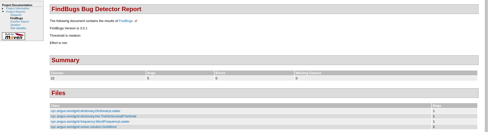
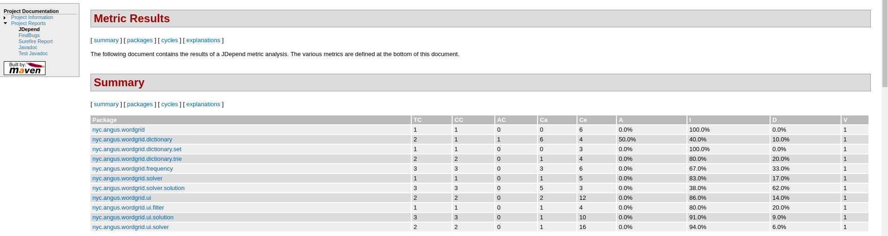

Maven(pom.xml)
<plugin>
<groupId>org.jacoco</groupId>
<artifactId>jacoco-maven-plugin</artifactId>
<version>0.7.4.201502262128 </version>
<executions>
<execution>
<id>pre-unit-test</id>
<goals>
<goal>prepare-agent</goal>
</goals>
<configuration>
<propertyName>surefireArgLine</propertyName>
</configuration>
</execution>
<execution>
<id>post-unit-test</id>
<phase>test</phase>
<goals>
<goal>report</goal>
</goals>
</execution>
</executions>
<configuration>
<excludes>
<exclude>**/ui/**</exclude>
<exclude>**/StartSolverUi**</exclude>
</excludes>
</configuration>
</plugin>coveralls-maven-plugin: JaCoCo, Cobertura, Saga
<plugin>
<groupId>org.eluder.coveralls</groupId>
<artifactId>coveralls-maven-plugin</artifactId>
<version>3.1.0</version>
</plugin>.travis.yml
language: java
script: mvn test
after_success:
- mvn clean test jacoco:report coveralls:report
jdk:
- oraclejdk8
.travis.yml
language: java
jdk:
- oraclejdk8
script:
- mvn test checkstyle:checkOutput: [ERROR] ... You have 323 Checkstyle violations. -> [Help 1]
.travis.yml
language: java
jdk:
- oraclejdk8
script:
- mvn site 
